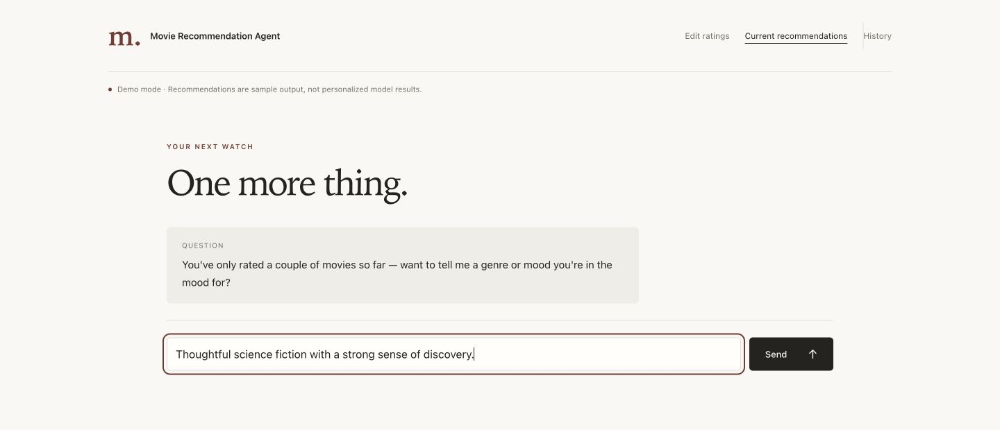
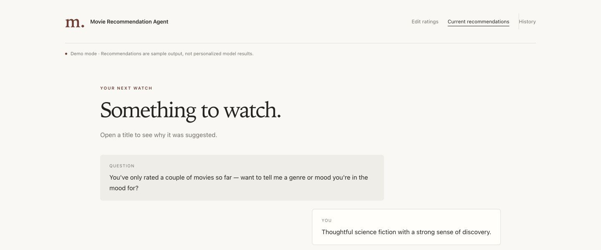

Synopsis
Who it's for. Your watch history tells a recommender what you liked, but not what you want to watch tonight. So I proposed a movie recommender that looks at what you've watched, can ask a follow-up question, and recommends a new list of movies.
What I did. I led the six-person team and did the work split. I built the embedding retrieval, the PostgreSQL database, the FastAPI backend and the React frontend. My teammates built data preparation, evaluation, the agent controller with grounding, and reranker training.
- Vector search: exact cosine search over 21,333 movies, with watched movies removed.
- Conversation: a follow-up question, saved state and recommendation history.
- Data layer: eight PostgreSQL tables, Alembic migrations and one data-access layer.
- Safe retries: the frontend checks server state before it resends an answer.
- Swappable model service: mock and HTTP clients behind the same contract.
The results.
- Responsive at 300 simulated users in a Locust load test, after I added overload protection. The original code failed at 100.
- 190 successful requests per second at 300 users, excluding the LLM.
- Almost 3 times better ranking from the team's reranker than embedding order, on the same candidates.


Engineering
Narrow 21,000 movies to 50
There are over 21,000 movies, which is too many for an LLM to rank one by one. I built the embedding retrieval. It narrows 21,333 movies to 50 candidates for each user with one matrix multiplication, so the LLM only needs to rank a small pool. Ties break by movie ID, so the same input always gives the same candidates. I generated top-50 candidate pools for 4,751 validation users and 3,779 test users.
Keep the API stateless
Each turn is saved in Postgres, so the API stays stateless and a user can continue later. I chose PostgreSQL because it lets me put one index on a whole JSON column, and then I can query any field inside it. Our agent trace format wasn't final yet, and we didn't know which fields we'd query later, so Postgres was the better fit.
Avoid duplicate submissions
A request can fail in the browser after the server already saved it. So the frontend locks in-flight requests, and before a retry, it checks the session state on the server.
Build the app and the models in parallel
I defined a contract with the model service and built a mock, so the app and the models could be built in parallel. The app runs end to end with the mock, and the HTTP client is ready for the real model service.
Add overload protection
I load-tested the API with Locust, stepping from 20 to 300 simulated users. The original code ran out of database connections at 100 users, because connections were held while a request waited on the model service. I made two changes. Each worker accepts at most 12 requests at a time and returns 503 for the rest, and each request gives its connection back before calling the model service. After that, the service stayed responsive up to 300 users. Under overload, it says no quickly instead of hanging.
The AI part
LLM4Rec means using a language model for recommendation. We turn the user's history and each movie into text, and the model ranks them. Traditional recommenders work well at scale, but they can't explain why they picked a movie, and they can't talk to you. An LLM can read your taste, explain its picks and ask a follow-up question.
Embedding search is cheap but rough. LLM ranking is better but expensive. So retrieval narrows the catalog first, and a small fine-tuned Qwen2.5-1.5B model ranks the candidates. My teammate trained it with supervised fine-tuning, because we already had correct answers: four stars or more is relevant, two and a half or less is not.
Users only look at the top few movies, so we use NDCG@10, which rewards putting the right movies near the top.
Results
On 500 test users, the team's reranker was almost three times better than embedding order on the same candidates (NDCG@10 from 0.012 to 0.036).
The load test ran for 60 seconds per step, from 20 to 300 simulated users, mixing movie search and full sessions. It ran on an Apple M2 with PostgreSQL in Docker and a mock model service, so it measures the API and database, not the LLM. At 300 users, the API handled 190 successful requests per second. 43 unit tests pass, including 5 new regression tests.

Next
Connect the trained model service, and improve candidate retrieval before using a bigger model.